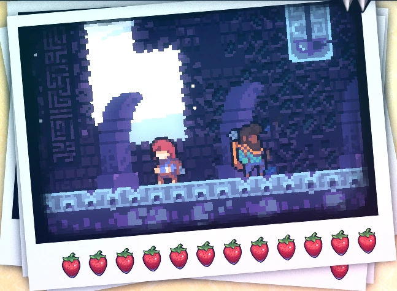
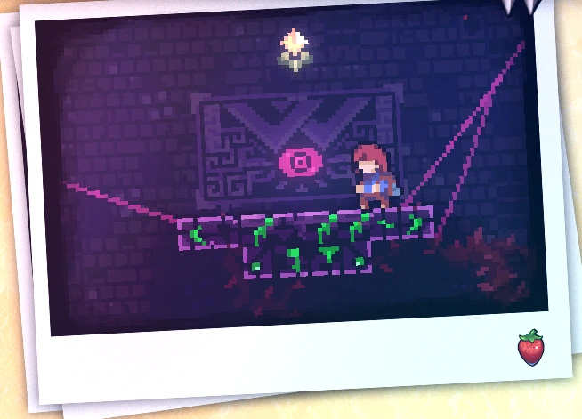
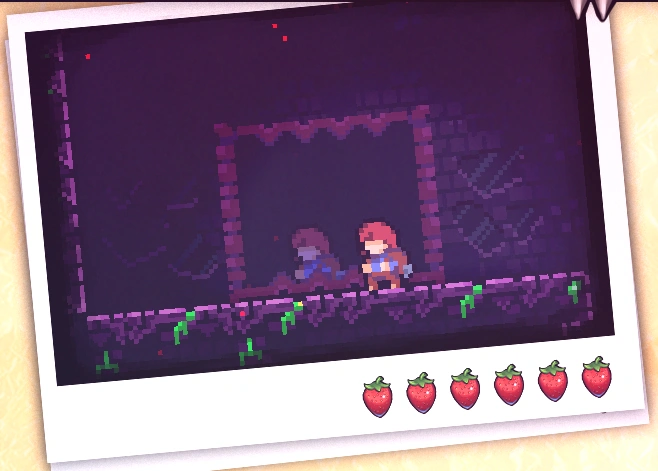
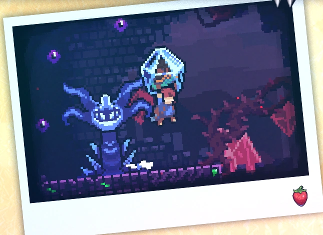

Chapter 5: Mirror Temple
Mirror Temple is the fifth chapter of Celeste. It doesn't show a significant difficulty increase when compared to Chapter 4, but still poses considerable challenges.
Mechanics
Plot
Theo and Madeline encounter a mysterious temple. Despite Madeline's warnings, Theo enters and gets trapped inside a mirror. Madeline explores the temple, finds a minigame called Seeker, and discovers that the temple amplifies the mountain's power. She finds Theo encased in crystal, surrounded by entities, and needs to carry him through the temple. Along the way, they encounter Theo-Doors and, facing a final obstacle, a large eye, Madeline defeats it by throwing Theo at it, freeing him from the crystal.
Dialogues
Collectibles
Crystal Heart:
Chapter 5's Crystal Heart is located in the second sub-chapter, "Depths." After getting the key above the statue, the player must enter the room beneath the statue to the right, then hop on the nearby bubble and travel to the right. Instead of opening the door at the end of the room, the player must enter a second bubble and travel to the left, then dash up into the center of the second platform on their way back. This moves the player into a third bubble that they can use to travel upwards, leading to a secret path above the door. After making their way through the long hallway to reach the next room and going through that room as normal, the player must now head to the bottom of the following room and dash downwards to break the brown Smashable Wall in the floor. This reveals another locked door that they can use the key on, which leads to the Crystal Heart's room. In order to navigate in the room, one must go along the outer edges of the room, using a set of moving blocks and platforms to get to the Crystal Heart (entitled Quiet and falling) and obtain it.

Cassette Tape:
Chapter 5's cassette tape is acquired in the second sub-chapter in a secret room.

Strawberries:
• Golden Strawberry:
Obtained after completing the stage while holding the golden strawberry. Can only be achieved after completing Chapter 8 Side B.
• Red Strawberry:
Strawberry 1: Red Strawberry:
Strawberry 2: Red Strawberry:
Strawberry 3: Red Strawberry with Wings:
Strawberry 4: Red Strawberry:
Strawberry 5: Red Strawberry:
Subchapters
Mirror Temple has 5 subchapters:
Start
Depths

Revelations
Search
Rescue
